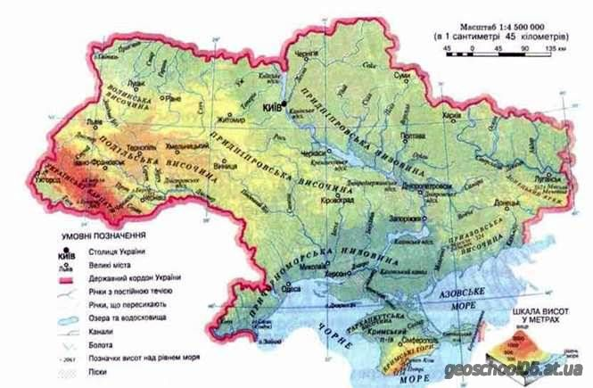

Розташування
Україна - незалежна європейська держава. Вона розташована у Центральній Європі. На півночі Україна межує з Білоруссю, на заході - з Польщею, Словаччиною та Угорщиною,на сході та північному сході - з Росією, та на південному заході та півдні - з Румунією та Молдовою
Територія
За площею території - 603,7 тис. кв. км Україна друга країна Європи (для порівняння: площа Франції - 551 тис. кв. км). Максимальна відстань між східним та західним кордонами України становить 1316 км, а між північним та південним кордонами - 893 км

Столиця та населення
Україна – незалежна демократична республіка. Столиця і найбільше місто України - Київ. Населення Києва - понад два з половиною мільйона осіб. Голова держави - Президент. Вищий законодавчий орган - Верховна Рада (парламент) Україна - багатонаціональна держава. У ній мешкає більше 41 мільйонів осіб. Основне населення - українці. Окрім цього в Україні проживають представники 100 інших національностей
Географія
Південні береги України омивають Чорне та Азовське моря. Найбільша ріка України - Дніпро, яка перетинає всю її територію з півночі на південь. Найбільший гірський масив - Східні (або Українські) Карпати, які в західній частині держави простяглися смугою до 270 км завдовжки. Найвищою вершиною Українських Карпат і всієї України є гора Говерла (2061 м. над рівнем моря). Більшість території України (95%) складають рівнини
Клімат
Клімат в Україні помірний, переважно континентальний.
Зима в Україні триває 55-75 днів (середня температура січня від -8 до +2° С) з частими відлигами, але часом бувають короткочасні морози до -30° С.
Літо тепле, на півдні країни спекотне (середня температура липня від +17 до +25° С). Бувають роки, коли температура влітку в окремі дні сягає +35° С

Відпочинок
Україна має чудові зони відпочинку на узбережжі Чорного та Азовського морів, гірськолижні курорти та курорти лікування мінеральними водами в Карпатських горах. Україна багата на архітектурно-історичні пам'ятки - об'єкти для захопливих екскурсійних подорожей